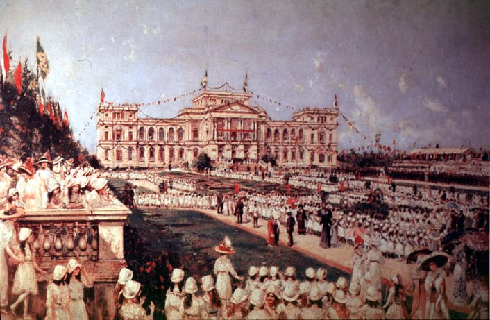

|
|  |
|
August暗 Salinas y Teruel, Museu do Ypiranga, 1912
|
In Brazil, the shift of regional power from the court-city of Rio de Janeiro to the booming coffee metropolis of S伋 Paulo was paralleled by a challenge mounted against the old National Museum on behalf of the Museu Paulista, a naturalist institution direrected by the combative German zoologist Hermann von Ihering. In one of the first numbers of the museum압 review Ihering had claimed that his was the only scientific institution in Brazil worthy of its name. However, the museum also embodied the city압 claim to a central place in national historiography, as part of an urban ensemble known as the 'Ypiranga Monument', constructed at the presumed site of Emperor Pedro I압 declaration of Brazilian independence from Portugal. August暗 Salinas y Teruel압 painting depicts the commemoration of independence, with the building and park decorated for the occasion with the colours of the city and the nation.
|